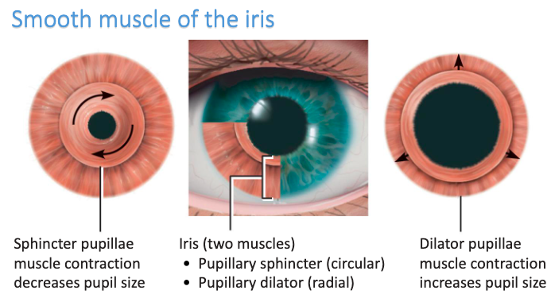

Anatomy
- Bony socket
- Eyelids = shutters
- Protect the anterior portion of the eyes
- Blinking help disperse tears
- Lubricating, cleansing, bactericidal tears
- Eyelashes trap fine, airborne debris
- Sclera - outer layer of connective tissue
- Cornea - outer portion of the most anterior part of the eye
- Choroid - middle layer, beneath the sclera
- Contains many blood vessels to nourish the retina
- Retina - inner most, beneath the choroid
- Outer layer = pigmented
- Inner layer = nervous-tissue
